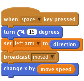

Scratch Card - Jointed Arm
Level 4
A jointed arm is made from two sprites, they can be quite tricky to build as the
two parts of the arm need to know where each other are in order not to separate
and look strange. This is done using a mathematical calculation called
trigonometry that is regularly used in the production of video games, robots and
other cool technology. Our first arms sprite is the upper arm, this is not too tricky,
as it will simply rotate at the shoulder and
move along with the body and all our other
body parts. One thing we will need to add
however is setting our arm direction to
variable (more on this later).

This next calculation is used to control the
lower arm. This is where we use trigonometry to calculate where the lower arm
should be place (you might need to ask for help when doing this).
![when I receive [moved v]
go to [Sprite3 v]
go to x: ((x position) + ((45) * ([sin v] of (left arm)))) y: ((y position) + ((45) * ([cos v] of (left arm))))](765177454140bb7f4f30e535c30f8f874762bf2e.png)
moved is used but you canNext our lower arm positions itself at the center point of the upper arm, this
should be the point where the top of the upper arm meets the shoulder body.
We then want to reposition the lower arm elbow to the other end of the upper
arm. Imagine that as the upper arm rotates around the shoulder we draw a
circle, first of all what is the radius of that circle? Well our arm in this example is
about 45 pixels long.
We then want to find out what point around that circle the other end of our arm
is, and position our lower arm there. We use the trigonometry calculation above to
reposition our lower arm and create an elbow.